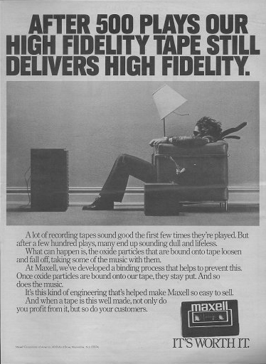
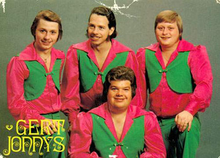

1963: Philips introduces the Compact Cassette on the market.
Although there were other magnetic tape cartridge systems, Philips' Compact Cassette became dominant as a result of Philips' decision in the face of pressure from Sony to license the format free of charge.
By 1966 over 250,000 recorders had been sold in the US alone and Japan soon became the major source of recorders.
By 1968, 85 manufacturers had sold over 2.4 million players.
In the early years, sound quality was mediocre, but it improved dramatically by the early 1970s when it caught up with the quality of 8-track tape and kept improving. The Compact Cassette went on to become a popular (and re-recordable) alternative to the 12-inch vinyl LP during the late 1970s. 
Peak:
During the 1980s, the cassette's popularity grew further as a result of portable pocket recorders and high-fidelity ("hi-fi") players, such as Sony's Walkman (1979).
Like the transistor radio in the 1950s and 1960s, the portable CD player in the 1990s, and the MP3 player in the 2000s, the Walkman defined the portable music market for the decade of the 80s, with cassette sales overtaking those of LPs.
Decline:
In Western Europe and North America, the market for cassettes declined sharply after its peak in the late 1980s. This was particularly noticeable with pre-recorded cassettes, the sales of which were overtaken by those of CDs during the early 1990s.
Among the last in the developed countries to leave the cassette format are artists and groups belonging to the "dansband" genre, many of whom still, in the early 2000s, had released their albums both to CD and to cassettes.  Since many of their fans now are older, they often belong to a generation less interested in buying a CD player. As late as 2006, Lasse Stefanz and Torgny Melins released their latest albums to both cassette and CD.
In recent years, the Compact Cassette format has seen a revival with independent record labels preferring to issue releases in this format due to its low cost and the difficulty in sharing tape music over the internet.
Underground and DIY communities release regularly, and sometimes exclusively, on cassette format, particularly in experimental music circles and to a lesser extent in hardcore punk, death metal, and black metal circles, out of a fondness for the format.